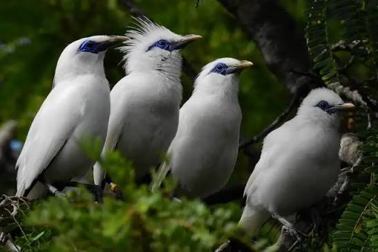
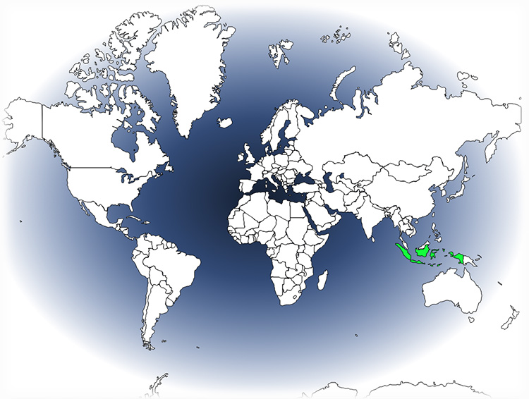

Bali Mynah
| Bali Mynah | |
|---|---|
| Kingdom: | Animalia |
| Phylum: | Chordata |
| Class: | Aves |
| Order: | Passeriformes |
| Family: | Sturnidae |
| Genus: | Leucopsar |

The Bali Mynah, second name Rothschild's mynah is a critically endangered bird species found only on the island of Bali.
It is a small, colorful bird with distinctive plumage and is known for its ability to mimic human speech.
Due to habitat loss and illegal trafficking, the Bali Mynah is one of the rarest birds in the world.
| Diet and Weight |
|---|
The Bali Mynah primarily feeds on fruits, seeds, and insects.
Their diet consists of figs, papaya, jackfruit, and nectar with additional bugs like Ants, and caterpillars being apart of their protein intake.
The weight of an adult Bali Mynah ranges from 100 to 150 grams compared to the wild weight of 75-95 grams.

| Behaveral Habits |
|---|
The Bali Mynah is a social bird, often seen in small groups.
They are also known for their playful behavior, often engaging in activities such as sliding down mud or snow banks, wrestling with each other, and playing with objects such as sticks or rocks.
| Conservation Status |
|---|
The Bali Mynah is listed as critically endangered on the "IUCN Red List of Threatened Species"; with an estimated population of fewer than 250 individuals remaining in the wild.
Due to habitat loss and illegal trafficking, the Bali Mynah is one of the rarest birds in the world.
Many cities and towns in Indonesia have implemented conservation programs to protect the Bali Mynah and its habitat.
| Habitat and Range |
|---|
The Bali Mynah is found in the tropical forests of Bali, Indonesia.
They prefer areas with dense vegetation and abundant food sources to live in.
The habitat of the Bali Mynah is threatened by deforestation and human encroachment.